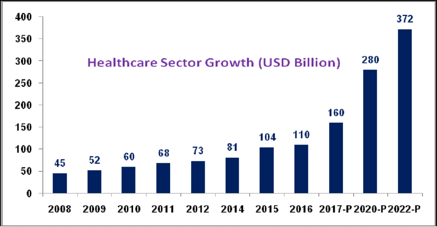

The healthcare industry (also called the medical industry or health economy) is an aggregation and integration of sectors within the economic system that provides goods and services to treat patients with curative, preventive, rehabilitative, and palliative care. It includes the generation and commercialization of goods and services lending themselves to maintaining and re-establishing health. The modern healthcare industry includes three essential branches which are services, products, and finance, and may be divided into many sectors and categories and depends on the interdisciplinary teams of trained professionals and paraprofessionals to meet the health needs of individuals and populations
The healthcare industry is one of the world's largest and fastest-growing industries. Consuming over 10 percent of the gross domestic product (GDP) of most developed nations, health care can form an enormous part of a country's economy. U.S. healthcare spending grew 2.7 percent in 2021, reaching $4.3 trillion or $12,914 per person. As a share of the nation's Gross Domestic Product, health spending accounted for 18.3 percent. The per capita expenditure on health and pharmaceuticals in OECD countries has steadily grown from a couple of hundred in the 1970s to an average of US$4'000 per year in current purchasing power parities.
Healthcare has become one of India’s largest sectors, both in terms of revenue and employment. Healthcare comprises hospitals, medical devices, clinical trials, outsourcing, telemedicine, medical tourism, health insurance and medical equipment. The Indian healthcare sector is growing at a brisk pace due to its strengthening coverage, services, and increasing expenditure by public as well private players. India’s healthcare delivery system is categorised into two major components - public and private. The government, i.e. public healthcare system, comprises limited secondary and tertiary care institutions in key cities and focuses on providing basic healthcare facilities in the form of primary healthcare centres (PHCs) in rural areas. The private sector provides majority of secondary, tertiary, and quaternary care institutions with major concentration in metros, tier-I and tier-II cities. India's competitive advantage lies in its large pool of well-trained medical professionals. India is also cost-competitive compared to its peers in Asia and Western countries. The cost of surgery in India is about one-tenth of that in the US or Western Europe. The low cost of medical services has resulted in a rise in the country’s medical tourism, attracting patients from across the world. Moreover, India has emerged as a hub for R&D activities for international players due to its relatively low cost of clinical research.